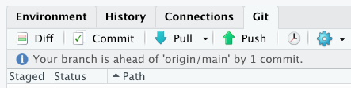

R.version.string # Older than 4.0.0? Update!Using Git/GitHub in RStudio ❤︎
A Beginner’s Guide to Version Control
Today’s Plan
![An image combining the logo of GitHub on the left and the logo of RStudo on the right, with a large blue plus sign in the middle. In terms of the GitHub logo, 'GitHub' is written in bold black font, accompanied by an image of a creature that appears to be the combination of an octopus and a cat. In terms of the RStudio logo, 'R' is written in blue font against a white background and placed in a circle. This circle is placed in a hexagon, in which 'Studio' is written in white font against a blue background and placed to the right of the 'R' circle.](https://bookdown.org/amy_yarnell/T32-book/images/session3/github-Rstudio.jpg "GitHub + RStudio")
- Version Control: What?
- Version Control: Why? Why not?
- Version Control: How?
- RStudio integration
- No need for the command line!
Resources
- Slides at shilaan.github.io/intro-github
- Happy Git and GitHub for the useR by Jennifer Bryan
- How to Use Git/GitHub with R, R for the Rest of Us
Version Control: What?
- Record the changes made over time to a file or a set of files in a folder
- Your set of files can include, e.g., data, code, figures, tables, and reports
- The folder that contains your files is called a repository
- Allows tracking project history, reviewing changes, and reverting to earlier versions
- Different version control systems exist
![The Turing Way project illustration by Scriberia. On the left, we see a stack of documents named 'draft doc', 'final doc', 'doc_07', 'final_final', and a hand is pulling out a document named 'final_final_FINAL'. This appears to represent a manual approach to version control. On the right, we instead see an automated approach to version control. A hand is dialing a large blue button that ranges from V1 to V6. The dial is currently pointed towards V3, and in the background we see the third document light up.](https://the-turing-way.netlify.app/_images/project-history.jpg "The Turing Way project illustration by Scriberia http://doi.org/10.5281/zenodo.3332807")
Version Control: What?
Git + GitHub for R users
- I focus on Git combined with GitHub, an online interface for using Git
- Git + GitHub is one of the most popular and user-friendly version control systems
- We can use Git/GitHub from within RStudio
- No command line experience necessary! üôè
![A cartoon showing two paths side-by-side. On the left is a scary spooky forest, with spiderwebs and gnarled trees, with a scared looking cute fuzzy monster running out of it. On the right is a bright, colorful path with flowers, rainbow and sunshine. A monster facing away from us in a backpack and walking stick is looking toward the right path. Although the illustration was initially created to signify the difference between manually setting working directories in R versus using a project-based approach combined with the here R package, to me, the left side represents using Git through the terminal while the right side represents using Git in RStudio. Artwork by @allison_horst.](images/here_blank.png "Artwork by @allison_horst")
Version Control: Why?
- Back up your work to a remote location
- Improve reproducibility and transparency (benefit others and your future self)
- Catch and fix mistakes
- Time travel!

Version Control: How?
Version Control: How?

- Create a GitHub repository
- Clone a GitHub remote to your local computer using RStudio
- Stage and commit changes to your local repository
- Push your local changes to the GitHub remote
Version Control: Workflow
Create a GitHub repository and clone it to your computer via RStudio
Log in to github.com
Create a new repository (click the large green New button)
Show screenshot
Open your new repository and click the large green Code button
Copy the Clone HTTPS URL to your clipboard
Show screenshot
Start a new Project in RStudio
- File > New Project > Version Control > Git
Show screenshot
- Copy the URL of your new GitHub repo in Repository URL
Show screenshot

- Create project!
- File > New Project > Version Control > Git

Version Control: Workflow
Commit local changes and push them to GitHub remote
Open your RStudio project and make local changes
Find the Git tab in the upper right pane
Show screenshot
Check the Staged box for the files you want to commit
- Click on Diff to see what’s changed in the file since your last commit
Show screenshot
- Click on Diff to see what’s changed in the file since your last commit
Click Commit, type an informative Commit message and commit!
Show screenshot
Simply click ⬆️ Push to push your local changes to your GitHub remote
Show screenshot

Confirm that the local changes are now in your GitHub remote
Show screenshot


Best practices

- Each commit should be minimal (changes related to a single problem)
- Each commit should be complete
- Each commit message should be concise, yet informative (describe the why)
- Don’t push it to your GitHub remote before it ‘works’
Keep in mind:
- Your future self is your most important collaborator!
- But‚Ķ Some version control is better than no version control! It‚Äôs okay to not be perfect. üßòüèΩ
Thanks!
Questions and/or feedback? Reach out to me!